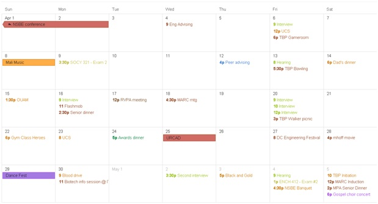

Creating A Work/University Balance (A College Student Perspective)

At some point in your academic career, you may find yourself with a part-time job. Even if you’re just taking classes, you might become involved with extracurricular activities. It's important to learn how to balance your classes with everything else in your life.
My job
My primary job is working in a research lab on campus. Additionally, I’m involved in a number of student organizations. All together, these activities account for about 20 hours a week out of my schedule.
My classes
I typically take 15 credits a semester, which translates to 5 classes. I usually spend 30 to 50 hours a week studying (which includes working on projects, problem sets, study groups and reading).
My tips
I’m starting my fifth year of undergrad (fourth year of simultaneously working part-time) and these are the tips that help me the most.
1. Write out a monthly schedule
Here is mine (I purposefully selected my busiest month). I include things like homework assignments, exams, project due dates, meetings, travel and personal events.
This kind of schedule will show you if there are any very busy times further down the road. In my schedule, I could see that the last Saturday was going to be a very busy day, so I was able to plan my activities accordingly. The earlier you know about a conflict, the sooner you can make a plan (which is the next bullet).
2. Have a contingency plan
There will, inevitably, be a period of time when you are slammed with school work. You’ll have a bunch of projects, exams, homework and meetings piled up. Plan for it now and think about what you will do if you find yourself falling behind. Will your employer let you change your schedule? Or work from home? Will you have to start your classwork earlier? Since I work on campus with a professor, he is very flexible with me changing my hours in order to study. I often make up for the time that I miss in the lab by doing some of my work at home though so that I do not fall behind with my project. Discuss options with your employer early.
3. Prioritize
At the end of the day, what is your ultimate goal? To have the highest GPA possible? To be the best employer? To get through college and your job? This will help you decide what to do first when you have a conflict.